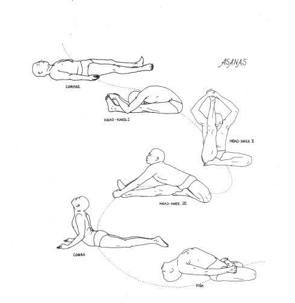
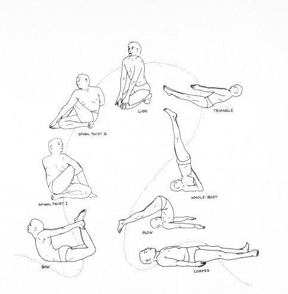
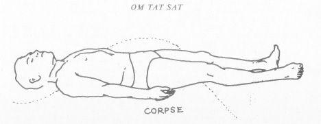

ASANAS
“Let a man though living in the body, so treat his body that, with right effort, right watchfulness and right concentration he will overcome the sorrow that is produced by the sensations that arise in the body.”—Dhamnapada
The word asana is sometimes translated as “easy, comfortable” and sometimes as “seat.” It concerns a comfortable seat in which one can remain for long periods of time.
“To remain motionless for a long time without effort is an asana.”—Yoga Darshana
“The aim of the bodily posture is secured when ‘the physical reactions of the body are eliminated and the mind dissolves into the Infinite.’ ”—Danielou, quoting from Yoga Darshana
You work with your body for some very obvious reasons. First, it is the environment in which you dwell in this incarnation on the physical plane. Second, unless you can cool out your body, it keeps on capturing your attention over and over again and thus distracts you from the one-pointedness of mind that you are seeking.
Third, to work with body energies and to be able to move such energies up the spine requires sensitization to nerves in the body of which most people are unaware. Until you can hear your body, you cannot bring it under voluntary control in such a way that it helps you rather than interferes with your sadhana. And fourth, a yogi realizes that the message of his being is reflected in all his manifestations and he seeks the power of the one-pointedness that comes from having his body as well as his thoughts directed towards the state of realization. Just as bringing the hands together in prayer or challenging someone with a raised fist have associated with them various thoughts and feelings, so it is with the total body. At any moment it is making its statement, and as you come to hear such statements you bring the messages of your body in line with the messages of your heart and head. For a realized being, every movement is a perfect statement.
It is well in undertaking work with the body (hatha yoga) to keep in mind these reasons. If in your head you undertake hatha yoga as a form of exercise or body building, you will end up with just what you reached for . . . a more beautiful body. On the other hand, if you undertake hatha yoga as a form of yoga then it will, in a relatively short time, bring about a profound metamorphosis in your body calmness, sensitivity, and lightness . . . all of which will facilitate your sadhana.
In undertaking asanas it is desirable to have a teacher who can demonstrate the correct positions and correct any bad habits that develop in your performance of the asanas. It is useful at the beginning to take an introductory course or set of lessons in hatha yoga if it is available to you. These lessons will start you on the right path. Even if a qualified teacher is not available, a friend who has had a teacher can point out errors in your asanas which will help you.
A note of caution, however. Teachers of hatha yoga who teach only hatha yoga often mistake the shadow for the substance. Although they may be able to point out correct postures and procedures, many of these teachers do not themselves comprehend the implications of the term yoga . . . that is, they are not doing asanas as a means of union with the One. A student who works with such teachers runs the risk of profaning the undertaking in the very beginning by developing a poor mental set towards this work. With this caution in mind, however, it is possible for you, if you understand the reasons (especially the one concerning the use of body positions as a form of prayer) for doing asanas, to learn specific methodology from a teacher who himself does not understand these reasons.
If a teacher is not available it is still possible for you to undertake the regular practice of asanas profitably. Under these conditions, however, you must move slowly and gently . . . don’t force your body . . . listen very carefully to the information that your body gives you. By proper centering you will, in fact, be calling upon an inner teacher who will guide you.
Asanas are positions. Once you have gotten into the position and made the statement connected with that position you are there. You become a statue in each asana.
The statue image is a useful one. No matter how unusual the position of the asana may seem to you, once you are in the position then you become totally centered in that position. It—your body—comes to be a position of rest . . . as if you were always in that position, as a statue.
Your state of mind is of paramount importance in asanas. Don’t identify with the ego who is doing the asanas. Merely watch the body move into the appropriate position. Stay in a place inside yourself where nothing is happening at all.
When the body has gotten into the asana as perfectly as it is able without forcing (just firm pressure) . . . then go into “neutral” with the body so that it becomes perfectly relaxed and stable in the position of the asana.
There are 84 main asanas which an advanced yogi works with. Of these about 12 or 15 are sufficient until one arrives at a very advanced stage of sadhana. The following are a set of instructions for carrying out these simple asanas:
1. Find a quiet place to work. It is best to be alone. The surface on which you work should be flat. A blanket or thin mat on the floor is suitable.
2. Your clothing should be light and very flexible (leotards) or very loose. Asanas may be done naked although men sometimes find a loin cloth or athletic supporter preferable.
3. Success of asanas is dependent upon your being relaxed and calm and centered. It’s going to start by relaxing yourself, just with breathing. Spread your arms wide, take in a breath, and then bring your arms across your chest and let the breath out. Let the breathing happen naturally, becoming deeper as you relax your arm movements more. Arms across your chest and then out, and then across your chest and then out. Breathe through your nose. Continue for a minute or two.
Another relaxing exercise is the turning, twisting of the body. Stand straight with arms extended straight out to the sides from your shoulders. Now twist the upper part of your body to the left so that your right arm comes out in front and the left arm is behind. At the same time, throw your left leg over to the right in front of your right leg. This forces the lower part of your body to turn in the opposite direction from the upper part. Then reverse the whole process . . . so that the left arm and right leg are extended out in front across your body. Do this in a relaxed swinging fashion to limber up your body.
Now lie down on your back for another loosening-up exercise. Pull your knees up to your chest and embrace them with your arms. Then roll back and forth with great relaxation just as if you’re a ball, and with abandon—total abandon—just roll. Roll, back and forth, side to side. This is just to relax your back and loosen you up.
4. Breathing pointers: when your head comes forward towards your feet (your body jack-knifes), you let out air. When your body straightens out or stretches backwards you take in air. It’s like a bellows. When you have gotten into an asana that involves bending or stretching, and you wish to go into it a little further, use small breaths to help. If the asana requires forward bending, take in a little breath and then as you let it out, let your body go just a bit further forward . . . and then another tiny breath, and so forth.
5. Do asanas at your own rate . . . calmly maintaining your center throughout the entire session.
I. SAVASANA (Corpse Position):
Lie flat on your back and relax. Legs out straight, feet together and your hands by your sides. Relax your feet, calves, thighs, pelvis, abdomen, chest, arms, neck and head.
II. PASHIMATASANA (Head-Knee Position):
Extend your arms very slowly over your head until they are stretched out straight behind you. Slowly sit up, bringing your arms and head up together and keeping your heels on the ground. Bend at the waist.
Smoothly proceed forward until you touch your toes. Keep your legs straight. If you can, hold your feet with your hands, pulling your feet towards you and bending your elbows until they are touching the ground on either side of your legs.


Make sure you are bending from as low in your back as possible. Don’t strain. Get into the asana as far as possible. Then take small breaths and with each exhalation go a little further.
Now stop and become aware of your entire body . . . note the pains and the stretching muscles and the tight places. Just BE for a moment. Now gently raise your arms and return to a prone position (inhaling as you do).
Work up daily until you are doing about thirty of these. Some may be started from a sitting position with hands extended over your head. Remember to avoid thinking “I am doing an asana.” Just experience the asana happening. Working with your eyes closed will help.
III. JANU-SIRASANA (Head-Knee Position):
Sit up with your legs stretched out in front of you. Now bend your left leg and place the sole of your left foot against the inside of the thigh of your right leg (which is still straight). Maintain that position. Raise your arms over your head and bring them slowly down towards your right foot. Bend as low in the back as possible.
Bring your head down until it is just to the left of your right knee. Then after a pause for the eternal moment, gently raise the upper part of your body until your hands are once again extended over your head. Work up daily until you are doing thirty of these.
IV. JANU-SIRASANA (Head-Knee Position):
Now change legs so that the left leg is extended and the right is bent. Repeat the asana as above.
You may also modify these two asanas by putting the foot on top of the thigh instead of next to it.
During the first few weeks you will probably experience pains and aches as well as the presence of muscles you never knew you had. Just be gently persistent. You will also notice dramatic improvement at first. Don’t get hung up measuring improvement. Just quietly and calmly do your asanas each day. Work at your own rate.
V. BHUJANGASANA (Cobra Position):
Roll over on your stomach and lie flat with your legs together and your hands by your sides. Bend your arms until your hands are flat on the floor next to your chest. Very gently start to push up with your forearms, thus raising the upper part of your body. Raise your head first, then your neck, and then slowly raise lower and lower parts of your spine.
At the same time you are raising the upper part of your body, press down into the ground with your pelvis. When the asana is done properly, you will finally feel the pressure at the tip of your spine.
Keep your head up. It is helpful to keep your eyes open and to keep trying to look further and further over your head.
When you have reached the point that you can reach comfortably, stop and remain in that position for about 15 seconds and then gently starting at the base of your spine, lower the upper part of your body to the ground. The head touches down last.
Remember your breathing. As you go up, breathe in; as you return, breathe out. Do about three of these.
You can also work with the “moving cobra.” Proceed as above until you have raised yourself as far as possible. Then, instead of returning to the ground, bend your knees until you are sitting back on your calves with your arms still stretched out before you. This forces you to curve your back towards the ground. Then keeping your head and upper part of your body very close to the ground, glide along the ground until you are again out straight and then start to raise the head and on down the spine. This moving cobra is one continuous serpentine movement.
VI. MATSYASANA (Fish Position):
Sit up and cross your legs. If you are able to get into the lotus position (that is, with the top of the foot resting upon the opposite thigh) do so. Don’t strain. You can adopt any cross-legged position that is comfortable.
Place your hands behind you and slowly let yourself back down until you are resting on your elbows. Then lower your head until the top of your head touches the ground. Arch your back. Rest the upper part of your body on the top of your head and the lower part of your body on your cross-legged seat. Now place your hands lightly on top of your thighs (or feet if you are in the lotus position). Remain in the position for about 15 to 30 seconds and then slowly return to a sitting position.
If you wish, at this point you can continue forward until your head is on the floor and your shoulders are resting on your thighs (or feet if you are in the lotus position). Then holding the wrist of one arm with the hand of the other behind your back, slowly raise your arms behind you as high as you can. Then bring them down and relax.
VII. DHANURASANA (Bow Position):
Roll over on your stomach. Behind your back take hold of your ankles with your hands, firmly. Now push away with your feet (attempt to extend your legs). This will bring your head and chest up. Keep lifting in this fashion until your thighs are fully off the ground. Look straight ahead. When you have gotten up as far as you can without strain, then remain in that position calmly for 15 to 30 seconds. Gently return to the ground. Do this asana three times. If you wish, when you are in the asana you can rock back and forth like a rocking chair.
VIII. ARDHA-HATSYENDRASANA (Twist Position):
Sit up straight with your legs out straight before you on the floor. Bend your left knee and put your left leg under your right leg so that the left heel is to the right of (and pressed firmly against) your right buttock. Now bring your right leg up by bending it at the knee and place the right foot flat on the ground to the left of the left knee.
Raise your left arm and twist the upper part of the body to the right until your left armpit is directly over your right thigh. Now turn your left forearm in such a fashion that you can pass it back through the triangle made by the bend in your right knee. At this point your left armpit is almost resting on top of the right thigh.
Reach around behind you with your right arm until your right and left hands can grip each other. Turn your head so that you are looking behind you over your right shoulder. Without straining, twist as far as possible. Then hold the position for about 15 to 30 seconds and return to a straight sitting position.
Now do the twist to the left, reversing all the above instructions.
IX. SIMHASANA (Lion Position):
Assume a kneeling position. Place your hands on your knees so that your fingers are extended outwards and you are leaning slightly forward.
Extend the tongue outward as far as possible and turn the eyes upward and towards the middle of the forehead. Exhale the breath as much as possible and contract the throat muscles. Make the entire body as taut as possible—as if you were a lion about to spring. Stop, return, and then relax. Repeat this asana about four times.
X. TOLANGULASANA (Balance Position):
Lie on your back. Raise your legs off the ground and spread them, keeping them straight. Then raise the upper part of your body to form a V with the point of contact with the ground being the tip of your spine. Stretch your arms forward between your spread legs. Remain in this position for 30 seconds. Don’t strain. Return to a relaxed position.
XI. SARVANGASANA (Neck Stand):
Lie flat on your back. Very gently, in one smooth movement, lift your legs off the ground (keeping them straight) and raise them until they are at a 90˚ angle to your torso. Then placing your hands behind your back, slowly lift your hips off the ground and more and more of your back, until only your head and neck are on the ground. Your back is supported by your hands, which should be as high up (close to the neck) on your back as possible. Elbows are on the ground. Remain with legs and body straight up for two minutes.
XII. HALASAN (Plough Position):
Starting from the neck stand, gently bring legs over head, still keeping them straight, until your toes touch the ground behind your head. Keeping your legs straight, attempt to bring your heels to the ground and to walk in towards your head. When you have gotten as close as possible without straining, then stop for 10 seconds.
XIII. KARNA PEEDASAN (Ear-Knee Position):
Starting from last position, now bend your knees until they touch the floor next to your ears. Remain in that position for ten seconds. Then gently retrace your steps, one by one, until you are back on the ground resting on your back. You can sense how limber your spine is as you come down from the neck stand. As you lower your body, press each vertebrae against the ground from the neck down. You should hear clicks along the way.
XIV. SAVASANA (Corpse Position):
Return to Corpse position and remain there for five minutes.
